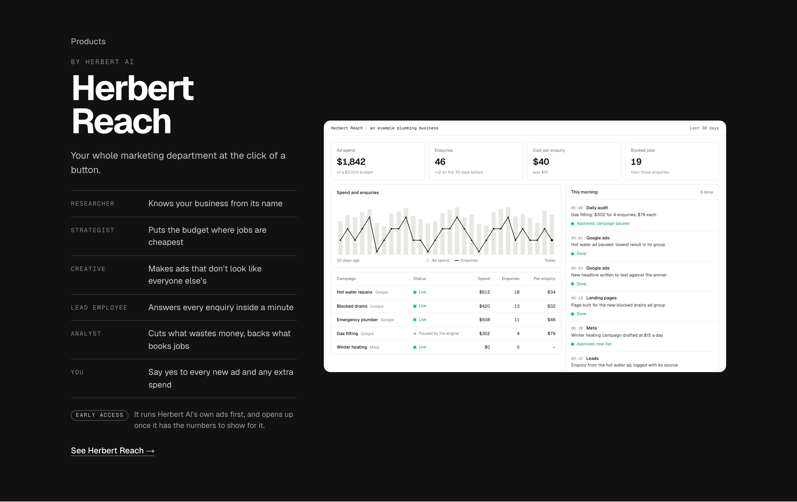
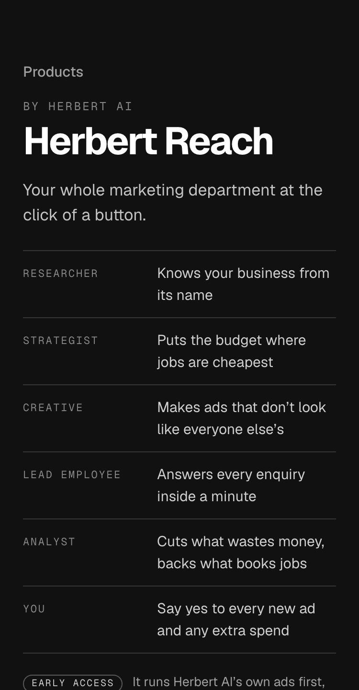
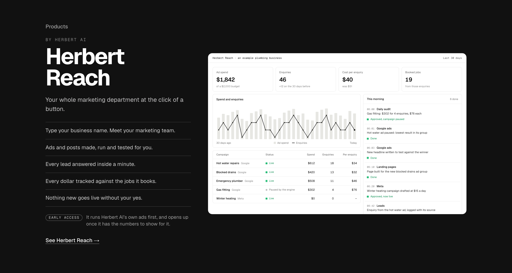
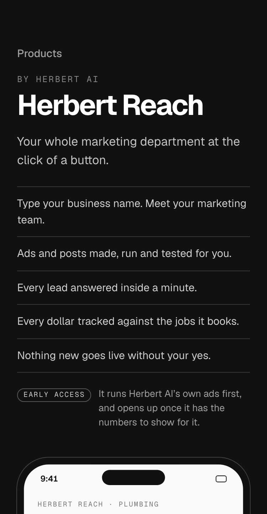

TodayWritten before the definition: three facts about ads only.


Detail 2 of 6, redrawn for energy after “they dont read that catchy”. Your line stays: “Your whole marketing department at the click of a button.” Only the ruled list changes. Every claim stays inside the Herbert Reach definition: no landing pages (not built yet), no results promised, and the approval rule is kept in every option. The dashboard is still the ads-only one; that is detail 3.



